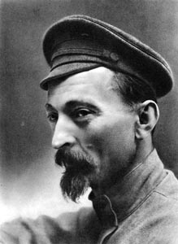

Дзержинский Ф.Э.
Дзержинский Феликс Эдмундович (партийные псевдонимы: Яцек, Якуб, Переплётчик, Франек, Астроном, Юзеф, Доманский)
Революционер, советский государственный деятель, глава ряда наркоматов, основатель ВЧК.
30.08.1877— 20.07.1926
Сын мелкопоместного дворянина, владельца хутора Дзержиново, учителя гимназии Эдмунда Иосифовича Дзержинского. Гимназистом в 1895 г. вступил в литовскую социал-демократическую организацию. Вёл пропаганду в кружках ремесленных и фабричных учеников и среди рабочих, неоднократно бывал арестован. Стал профессиональным революционером. В январе 1902 г. выслан на 5 лет в Вилюйск, некоторое время находился в Пересыльной тюрьме Александровского централа. По пути к месту поселения бежал на лодке из г. Верхоленска и эмигрировал; на конференции СДКПиЛ в Берлине избран секретарём заграничного комитета партии. Организовал издание газеты «Червоны штандар» («Красное Знамя») и транспортировки нелегальной литературы из Кракова в Царство Польское. Делегат 4-го съезда СДКПиЛ (июль 1903), избран членом её Главного Правления. Во время русско-японской войны 1904—1905 гг. организовывал в Польше бунты рабочих и диверсии, во время революционных событий 1905 года возглавил первомайскую демонстрацию, действовал в военно-революционной организации. В июле 1905 г. арестован, в октябре освобождён по амнистии. Делегат 4-го съезда РСДРП (1906), введён в редакцию центрального органа партии, был представителем польских социал-демократов в военно-революционной организации РСДРП. С июля по сентябрь 1906 г. находился в Петербурге, затем снова в Варшаве, где в декабре был арестован; в июне 1907 г. освобождён под залог. На 5-м съезде РСДРП (1907) заочно избран членом ЦК РСДРП. В апреле 1908 г. вновь арестован. В 1909 г. приговорён к лишению всех прав состояния и пожизненному поселению в Сибири (село Бельское, затем Сухово и Тасеево Енисейской губернии), откуда бежал в ноябре 1909 г. на Капри к Горькому. В 1910 г. вернулся и продолжил деятельность в Польше. В марте 1910 г. как секретарь и казначей главного правления партии действовал в Кракове, где женился на С.С. Мушкат. Активно выступал против того, чтобы придать деятельности партии «по возможности легальный, а социальному перевороту по возможности мирный и менее болезненный характер». После нелегального возвращения в январе 1912 г. в Варшаву был в сентябре снова арестован и в апреле 1914 г. приговорён к 3 годам каторжных работ; отбывал их в Орловском централе. Дополнительно приговорён в 1916 г. ещё к 6 годам каторги, отбывал её в Бутырской тюрьме в Москве, откуда был освобождён 1 марта 1917 г. после Февральской революции. Вёл активную подготовку большевистского переворота, организовывал отряды Красной Гвардии в Москве. 10 (23) октября участвовал в заседании ЦК РСДРП, принявшем решение о вооружённом захвате власти, введён в состав Военно-революционного центра, занимался организацией переворота. Участвовал в работе 2-го Всероссийского съезда советов, избран членом ВЦИК и Президиума ВЦИК, а 21 октября — в исполком Петроградского Совета. Выступал против соглашения с Викжелем о расширении партийного состава Советского правительства. Во время переворота 25 октября осуществил захват Главного почтамта и телеграфа.
В декабре 1917 г. при СНК создана Всероссийская чрезвычайная комиссия по борьбе с контрреволюцией и саботажем, Дзержинский назначен её председателем и оставался им до её преобразования в ГПУ в феврале 1922 г. В качестве шефа ВЧК проводил жестокую политику репрессий против противников большевистского режима. Был инициатором массового террора, провокаций, института заложников и т.п. После покушения на Ленина осуществлял «красный террор». Руководил борьбой с повстанческим движением на Украине. Во время войны с Польшей в 1920 г. являлся начальником тыла (возглавлял охрану революционного порядка) и членом Временного ревкома Польши и Польского бюро ЦК РКП(б), и одновременно был членом ЦИК коммунистической рабочей партии Польши, действовавшего в Смоленске. Был одним из организаторов массового террора в Крыму с ноября 1920 по март 1921 г., где по официальным советским данным было приговорено к расстрелу около 500 человек. После окончания Гражданской войны — председатель комиссии по выработке мер по усилению охраны государственных границ. В 1922—26 гг. председатель ГПУ (ОГПУ). Скончался 20 июля 1926 г. от сердечного приступа, после доклада на пленуме ЦК, посвященном состоянию экономики в СССР. Похоронен на Красной площади в Москве у кремлёвской стены.
| Громыко А.А.< Предыдущая | Следующая >Димитров Г. |
|---|